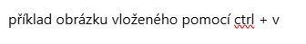

Rychlá referenční příručka pro Python (vhodná pro začátečníky i pokročilejší). Každá sekce obsahuje krátké příklady a komentáře.
python # spustí interaktivní režim
python script.py # spustí skript
Provádíme na začátku programu.
import math
from os import path
print(math.sqrt(16))
print(path.exists("data.txt"))
import os
# Pro Windows
os.system('cls')
# Pro macOS a Linux
os.system('clear')
"""
Víceřádkový komentář
nebo docstring pro funkce
"""
x = 5 # int
y = 3.14 # float
name = "Python" # string
is_fun = True # boolean
s = "Hello World"
len(s) # délka řetězce
s.lower() # "hello world"
s.upper() # "HELLO WORLD"
s.title() # "Hello World"
s.strip() # odstraní mezery na okrajích
s.replace("World", "Python")
"Python" in s # True
s[0:5] # "Hello"
s[-1] # poslední znak -> "d"
s[1:] # vypíše znak a všechny za ním -> "ello Python"
s[:3] # vypíše znak a všechny před ním -> "Hel"
name = "Eva"
age = 26
greeting = f"Ahoj, {name}!" # Vloží hodnotu proměnné name
info = f"{name} má {age} let." # Vloží více proměnných
print(greeting) # Ahoj, Eva!
print(info) # Eva má 26 let.
# f-string může obsahovat i výrazy
calculation = f"10 + 5 = {10 + 5}" # výsledek výrazu přímo v řetězci
print(calculation) # 10 + 5 = 15
greeting2 = "Ahoj, {}!".format(name)
info2 = "{} má {} let.".format(name, age)
print(greeting2) # Ahoj, Eva!
print(info2) # Eva má 26 let.
greeting3 = "Ahoj, %s!" % name # %s jako string
info3 = "%s má %d let." % (name, age) # %d jako decimal integer
print(greeting3) # Ahoj, Eva!
print(info3) # Eva má 26 let.
pi = 3.1415926535
print(f"Pi na 2 desetinná místa: {pi:.2f}") # Pi na 2 desetinná místa: 3.14
print(f"Zarovnání vlevo: {name:<10}!") # Eva !
print(f"Zarovnání vpravo: {name:>10}!") # Eva!
print(f"Zarovnání na střed: {name:^10}!") # Eva !
print() a input() v Pythonuprint()print("Ahoj světe!") # Vypíše text
print(5 + 3) # Vypíše výsledek výpočtu: 8
input()name = input("Zadej své jméno: ")
print(f"Ahoj, {name}!")
age = int(input("Zadej svůj věk: "))
print(f"Za rok ti bude {age + 1} let.")
from datetime import datetime, timedelta
# Získání aktuálního času
now = datetime.now()
print(now) # celý objekt datetime (např. 2025-10-23 14:37:52.123456)
print(type(now)) # <class 'datetime.datetime'>
# ---- Výpis jednotlivých částí ----
print("Rok:", now.year) # 2025
print("Měsíc:", now.month) # 10
print("Den:", now.day) # 23
print("Hodina:", now.hour) # 14
print("Minuta:", now.minute) # 37
print("Sekunda:", now.second) # 52
import random
colors = ["červená", "modrá", "zelená", "žlutá"]
random_color = random.choice(colors)
print("Náhodná barva:", random_color)
Díky tomu budou náhodná čísla opakovatelná při každém spuštění
random.seed(42)
# Nastaví počáteční bod generátoru náhodných čísel.
# Pokud použiješ stejný seed, dostaneš stejnou posloupnost náhodných čísel.
print("Náhodné číslo 1:", random.randint(1, 10)) # 1. číslo
print("Náhodné číslo 2:", random.randint(1, 10)) # 2. číslo
# Další použití random.choice se seedem
random_choice_with_seed = random.choice(colors)
print("Náhodná barva se seedem:", random_choice_with_seed)
a, b = 10, 3
a + b # 13
a - b # 7
a * b # 30
a / b # 3.3333
a // b # celočíselné dělení -> 3
a % b # zbytek po dělení -> 1
a ** b # mocnina -> 1000
x = 10
if x > 0:
print("kladné")
elif x == 0:
print("nula")
else:
print("záporné")
status = "OK" if x > 0 else "NOK"
for i in range(5): # 0–4
print(i)
i = 0
while i < 3:
print(i)
i += 1
for item in ["jablko", "banán"]:
print(item) # Vypíše itemy z listu
def greet(name="světe"): # Hodnota default argumentu je "světe"
"""Vrátí pozdrav""" # Docstring
return f"Ahoj, {name}!"
print(greet("Pepa")) # Změnili jsme argument na "Pepa" -- Ahoj, Pepa
Docstring (documentation string) je speciální řetězec v trojitých uvozovkách """ ... """,
který slouží k dokumentaci funkcí, tříd, metod a modulů.
📌 Umisťuje se hned za definici funkce, třídy nebo modulu — ne jako komentář, ale jako součást kódu.
def greet(name):
"""Vrátí textový pozdrav pro zadané jméno."""
return f"Ahoj, {name}!"
args: argumenty funkce (s čím funkce pracuje)
returns: co funkce vrací
raises: výjimky, co může funkce vyhodit
def divide(a, b):
"""
Vydělí první číslo druhým.
Args:
a (float): Dělenec.
b (float): Dělitel.
Returns:
float: Výsledek dělení.
Raises:
ZeroDivisionError: Pokud je dělitel nulový.
"""
if b == 0:
raise ZeroDivisionError("Dělení nulou není povoleno.")
return a / b
nums = [1, 2, 3] # vytvoří seznam s prvky 1, 2 a 3
nums.append(4) # přidá číslo 4 na konec seznamu
nums.remove(2) # odstraní první výskyt čísla 2 ze seznamu
nums.sort() # seřadí prvky seznamu vzestupně
len(nums) # vrátí počet prvků v seznamu (v tomto případě 3)
# Vytvoření slovníku s klíči "name" a "age"
person = {"name": "Eva", "age": 25}
# Změna hodnoty přiřazené ke klíči "age" na 26
person["age"] = 26
# Přidání nového páru klíč–hodnota (např. město)
person["city"] = "Brno"
# Přístup k hodnotě podle klíče
print(person["name"]) # vypíše: Eva
# Bezpečný přístup pomocí .get() – nevyvolá chybu, pokud klíč neexistuje, vypíše se výchozí hodnota "neznámý"
print(person.get("email", "neznámý")) # vypíše: neznámý
# Odstranění páru s klíčem "city"
person.pop("city")
# Výpis všech klíčů ve slovníku
print(person.keys()) # dict_keys(['name', 'age'])
# Výpis všech hodnot
print(person.values()) # dict_values(['Eva', 26])
# Výpis všech dvojic klíč–hodnota
print(person.items()) # dict_items([('name', 'Eva'), ('age', 26)])
# Cyklem lze procházet všechny položky
for key, value in person.items():
print(key, "=", value)
# Vytvoření tuplu se třemi prvky
point = (2, 3, 5)
# Přístup k jednotlivým prvkům podle indexu (indexování začíná od 0)
x = point[0] # první prvek: 2
y = point[1] # druhý prvek: 3
z = point[2] # třetí prvek: 5
Tupl je neměnný (immutable) – nelze měnit hodnoty jednotlivých prvků
# point[0] = 10 # toto by vyvolalo chybu!
# Délka tuplu
length = len(point) # 3
# Tupl lze procházet v cyklu
for coordinate in point:
print(coordinate)
# Tupl může obsahovat různé typy hodnot
person = ("Eva", 26, "Brno")
# Přístup k hodnotám
name = person[0] # Eva
age = person[1] # 26
city = person[2] # Brno
# Tupl lze rozbalit do proměnných
name, age, city = person
a = {1, 2, 3}
b = {3, 4, 5}
a | b # sjednocení
a & b # průnik
a - b # rozdíl
try:
result = 10 / 0
except ZeroDivisionError:
print("Nelze dělit nulou!")
except Exception as e:
print("Jiná chyba:", e)
else:
print("Bez chyby")
finally:
print("Toto se provede vždy.")
💡 Shrnutí:
try – pokouší se provést riskantní kód.
except – zachytává konkrétní chyby a umožňuje reagovat.
else – provede se, pokud žádná chyba nenastane.
finally – provede se vždy, ideální pro úklid (např. zavření souboru, uvolnění zdrojů).
V mnoha Markdown editorech (např. VS Code, Obsidian) můžeš obrázek vložit z clipboardu jednoduše pomocí Ctrl + V.


<p align="center">
<img src="https://www.python.org/static/community_logos/python-logo.png" alt="Python logo" width="200" />
</p>